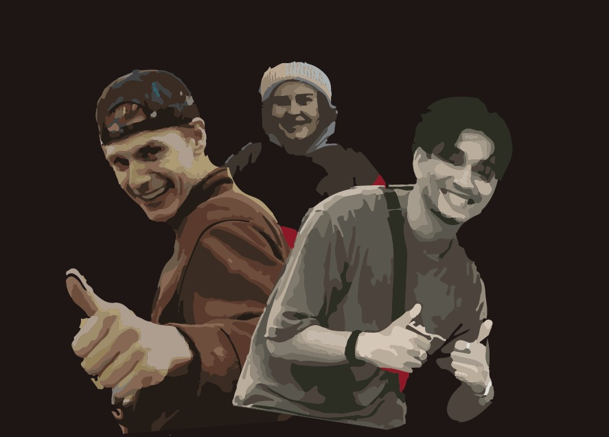

Welkom
Hé en welkom bij onze podcast! Wij zijn RisingJockReport, een groep van drie studenten aan de HVA! alle drie heel sportief en allemaal geïnteresseerd in de ontwikkelingen in de sport. We hebben ervaringen in verschillende sporten en willen onze kennis combineren om jullie precies te vertellen hoe en wat jij moet doen!
Er zijn tegenwoordig veel opvattingen in de sport over wat je wel en niet moet innemen... Het is nogal wat. Maar maak je geen zorgen, want wij, RisingJockReport, zijn hier om jou precies te vertellen wat je wel en niet moet doen!
Video!
Hieronder alvast een voorproefje van onze podcast!
afleveringen
-

afl.6 proteine
In de sportwereld zijn eiwitten tegenwoordig erg belangrijk. Veel influencers hebben het over wat je allemaal moet innemen, een groot deel daarvan zegt dus ook dat je veel eiwitten moet innemen. Maar wat is daar nou eigenlijk van waar?
-
afl.5 vitamines
Vitamines zijn een vaak vergeten onderdeel in het fit blijven en sporten. Om je ontwikkeling te stimuleren is je vitamine waarden op een goed level hebben super belangrijk. Het is daarom ook belangrijk om het hierover te hebben.
-
afl.4 rust
Rust is een uiterst belangrijk in de sport. Zonder rust kom je nergens. Het is dus erg belangrijk dat je als sporter genoeg rust neemt om te herstellen van je zware trainingssessies. Als je dat namelijk niet goed genoeg doet wordt sporten opeens heel zwaar.
-
afl.3 afvallen
Afvallen is bij veel mensen een grote uitdaging. Ook bij onze doelgroep, voor sommige is het een stuk makkelijker om aan te komen. Die moeten goed letten op wat ze eten. Vandaar dat wij dit onderwerp ook behandelen tijdens onze podcast
-
afl.2 doping
Sport enhancing drugs zijn een groot taboe. Maar wat is er nou echt slecht aan al die middelen? Of wat kan je wel op een normale manier gebruiken? Wij gaan behandelen welke dingen worden gezien als illegale en legale hulpmiddelen, en wat de effecten ervan kunnen zijn.
-
afl.1 spieropbouw
Voor veel mensen is spieropbouw een belangrijk onderdeel in de sport. Vaak is dat dan ook het doel voor mensen die bijvoorbeeld veel naar de sportschool gaan. Maar hoe doe je dat nou? Hoe bereik jij nou jouw ideale spiermassa? Wij zoeken het uit!